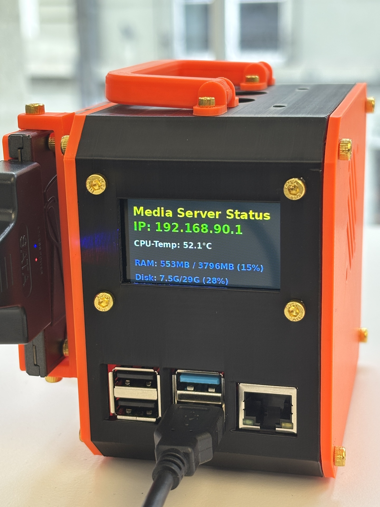

Anleitung.
Inhaltsverzeichnis
6. Display & Button
Ein SPI (Serial Peripheral Interface) muss freigegeben werden. Ausserdem wird ein benötigt, das beim Systemstart automatisch ausgeführt wird. Dazu das Raspberry Pi wieder starten und per SSH verbinden.
- Um den SPI freizugeben, muss eine configdatei geändert werden. Anschliessend ist ein reboot zwingend (sudo reboot). Danach das virtual enviroment wieder aktivieren!
- Wie beim Blinka Test ein Skriptfile erstellen
- Den Code in das Skript copy-pasten. Mit ctrl + x, dann y, dann Enter speichern
- Für den Autostart brauchen wir eine neue Datei
- Den Code copy-pasten und speichern. Hier muss der Benutzername zwingend angepasst werden (user=x).
- Den Autostart aktivieren und das System neustarten. Danach das virtual enviroment wieder aktivieren
- Das Display sollte jetzt Systeminfos anzeigen. Mit dem Powerbutton lässt sich der Server ein- und ausschalten (kurz gedrückt halten)
#SPI freigeben
sudo nano /boot/firmware/config.txt
#Am Ende der Datei hinzufügen:
dtoverlay=spi0-1cs,cs0_pin=7
#Skriptfile erstellen
source ~/env/bin/activate
cd $HOME
nano system_status.py
# Importiere die notwendigen Bibliotheken für SPI und GPIO-Pins (Blinka)
import board
import digitalio
import busio
import time
import subprocess
import os
# KEIN 'import RPi.GPIO' MEHR!
# Importiere Display-Treiber (PIL-Modus)
try:
from adafruit_rgb_display import st7789 as st7789_driver
from PIL import Image, ImageDraw, ImageFont
except ImportError:
print("FATAL: Adafruit Display oder Pillow nicht gefunden. Display deaktiviert.")
st7789_driver = None
# -------------------------------------
# HAUPT-INITIALISIERUNG
# -------------------------------------
def initialize_hardware():
"""Initialisiert SPI, Display, Taster und LED mit digitalio."""
display = None
led = None
button = None
# -----------------------------
# Standard-LED Initialisierung (mit digitalio)
# -----------------------------
LED_PIN = board.D14 # GPIO 14 (Pin 8)
try:
led = digitalio.DigitalInOut(LED_PIN)
led.direction = digitalio.Direction.OUTPUT
led.value = True # LED anschalten
print(f"Standard-LED an GPIO {LED_PIN} (digitalio) aktiviert.")
except Exception as e:
print(f"Fehler beim Initialisieren der Standard-LED: {e}")
# -----------------------------
# Taster-Initialisierung (mit digitalio)
# -----------------------------
BUTTON_PIN = board.D3 # KORREKTUR: Geändert von D5 auf D3 (GPIO 3)
try:
button = digitalio.DigitalInOut(BUTTON_PIN)
button.direction = digitalio.Direction.INPUT
button.pull = digitalio.Pull.UP # Interner Pull-Up (Taster muss zu GND ziehen)
print(f"Taster an GPIO {BUTTON_PIN} (digitalio) aktiviert.")
except Exception as e:
print(f"Fehler beim Initialisieren des Tasters: {e}")
# -----------------------------
# Display-Initialisierung (NACH GPIO)
# -----------------------------
if st7789_driver:
try:
# SPI-Bus initialisieren
spi = busio.SPI(clock=board.SCK, MOSI=board.MOSI)
# Steuerungspins
tft_cs = digitalio.DigitalInOut(board.CE0)
tft_dc = digitalio.DigitalInOut(board.D25)
tft_rst = digitalio.DigitalInOut(board.D24)
# Display-Treiber initialisieren (ST7789, 170x320 Physisch)
display = st7789_driver.ST7789(
spi,
cs=tft_cs,
dc=tft_dc,
rst=tft_rst,
width=170, # Physische Breite
height=320, # Physische Höhe
x_offset=35, # KORREKTUR für 170px-Displays auf 240px-Controller
y_offset=0,
rotation=0, # Keine Treiber-Rotation
baudrate=24000000
)
print("Display-Treiber erfolgreich initialisiert.")
except Exception as e:
print(f"Display-Initialierungsfehler (SPI/Pins): {e}")
return display, led, button
# -------------------------------------
# HILFSFUNKTIONEN FÜR DATEN
# -------------------------------------
def get_ip_address():
try:
ip = subprocess.check_output("hostname -I | awk '{print $1}'", shell=True).decode("utf-8").strip()
return ip if ip else "N/A"
except Exception:
return "IP Fehler"
def get_cpu_temp():
try:
temp = subprocess.check_output("vcgencmd measure_temp | grep -o -E '[[:digit:]|.]*'", shell=True).decode("utf-8").strip()
return f"{float(temp):.1f}°C"
except Exception:
return "Temp N/A"
def get_mem_usage():
try:
MemUsage = subprocess.check_output("free -m | awk 'NR==2{printf \"%.0fMB / %.0fMB (%.0f%%)\", $3,$2,$3*100/$2 }'", shell=True).decode("utf-8").strip()
return MemUsage
except Exception:
return "RAM Fehler"
def get_disk_usage():
try:
DiskUsage = subprocess.check_output("df -h | awk '$NF==\"/\"{printf \"Disk: %s/%s (%s)\", $3,$2,$5}'", shell=True).decode("utf-8").strip()
return DiskUsage
except Exception:
return "Disk Fehler"
# -------------------------------------
# HAUPTPROGRAMM
# -------------------------------------
if __name__ == "__main__":
display, led, button = initialize_hardware()
# Zeitstempel für das Display-Update
last_update = 0
# Status für Taster-Entprellung
button_pressed_time = 0
SHUTDOWN_THRESHOLD = 0.2 # 200ms
shutting_down = False
if display:
# Puffer für das Querformat (320x170)
WIDTH = 320
HEIGHT = 170
image = Image.new("RGB", (WIDTH, HEIGHT))
draw = ImageDraw.Draw(image)
# --- Fonts ---
try:
font_large = ImageFont.truetype("/usr/share/fonts/truetype/dejavu/DejaVuSans-Bold.ttf", 24)
font_medium = ImageFont.truetype("/usr/share/fonts/truetype/dejavu/DejaVuSans-Bold.ttf", 16)
font_small = ImageFont.truetype("/usr/share/fonts/truetype/dejavu/DejaVuSans.ttf", 12)
except IOError:
font_large = ImageFont.load_default()
font_medium = ImageFont.load_default()
font_small = ImageFont.load_default()
# Positionen
TITLE_Y = 10
IP_Y = 40
CPU_Y = 80
MEM_Y = 120
DISK_Y = 150
print("Starte Hauptschleife...")
while not shutting_down:
current_time = time.time()
# --- Taster-Abfrage (Polling) ---
if button:
# Taster.value ist False, wenn er gedrückt wird (wegen Pull.UP)
if not button.value:
if button_pressed_time == 0:
# Taster wurde gerade eben gedrückt
button_pressed_time = current_time
else:
# Taster ist nicht gedrückt, setze Timer zurück
button_pressed_time = 0
# Prüfe, ob der Taster lange genug gedrückt wurde (Entprellung)
if button_pressed_time > 0 and (current_time - button_pressed_time > SHUTDOWN_THRESHOLD):
print("Taster gedrückt! System fährt jetzt herunter.")
shutting_down = True
# LED blinkt zur Bestätigung
if led:
for _ in range(3):
led.value = False
time.sleep(0.1)
led.value = True
time.sleep(0.1)
led.value = False # LED aus vor Shutdown
# --- NEU: Display vor dem Shutdown löschen ---
if display:
try:
print("Lösche Display vor Shutdown...")
# Schwarzen Hintergrund zeichnen (auf das 320x170 Bild)
draw.rectangle((0, 0, WIDTH, HEIGHT), fill=(0, 0, 0))
# Das 320x170 Bild rotieren (damit es zur 170x320 Hardware passt)
rotated_image = image.rotate(270, expand=True)
# Das schwarze Bild an das Display senden
display.image(rotated_image)
except Exception as e:
print(f"Fehler beim Löschen des Displays: {e}")
# -------------------------------------------
os.system("sudo shutdown -h now")
break # Schleife verlassen
# --- Display-Update (alle 5 Sekunden) ---
if current_time - last_update > 5.0:
last_update = current_time
# Hintergrund löschen (Dunkelgrau)
draw.rectangle((0, 0, WIDTH, HEIGHT), fill=(34, 34, 34))
# Daten abrufen
ip_addr = get_ip_address()
cpu_temp = get_cpu_temp()
mem_usage = get_mem_usage()
disk_usage = get_disk_usage()
# Titel zeichnen
draw.text((10, TITLE_Y), "Media Server Status", font=font_large, fill=(255, 255, 0))
draw.text((10, IP_Y), f"IP: {ip_addr}", font=font_large, fill=(0, 255, 0))
draw.text((10, CPU_Y), f"CPU-Temp: {cpu_temp}", font=font_medium, fill=(255, 255, 255))
draw.text((10, MEM_Y), f"RAM: {mem_usage}", font=font_medium, fill=(150, 150, 255))
# Disk-Nutzung (KORRIGIERT: Größe und Farbe)
draw.text((10, DISK_Y), disk_usage, font=font_medium, fill=(150, 150, 255))
# Rotiere das gezeichnete Bild (320x170) um 270 Grad,
rotated_image = image.rotate(270, expand=True)
# Bild an das Display senden
display.image(rotated_image)
# Kurze Pause, um die CPU nicht zu überlasten
time.sleep(0.05) # Prüft den Taster alle 50ms
else:
print("Display-Initialisierung fehlgeschlagen. Starte Notfallschleife (nur Taster).")
while not shutting_down:
current_time = time.time()
if button:
if not button.value:
if button_pressed_time == 0:
button_pressed_time = current_time
else:
button_pressed_time = 0
if button_pressed_time > 0 and (current_time - button_pressed_time > SHUTDOWN_THRESHOLD):
print("Taster (Notfall) gedrückt! System fährt jetzt herunter.")
shutting_down = True
if led:
led.value = False
os.system("sudo shutdown -h now")
break
time.sleep(0.05)
#Config File erstellen
sudo nano /etc/systemd/system/display_status.service
# Code copy-pasten und speichern
[Unit]
Description=Media Server Status Display (ST7789)
# Startet erst nach dem Netzwerk und bei aktivem Multi-User-Modus.
After=network.target multi-user.target
[Service]
# Setzt den Benutzer, unter dem das Skript läuft.
#BENUTZERNAME ANPASSEN!
User=adspi
# Startet den Prozess aus dem Home-Verzeichnis des Benutzers
WorkingDirectory=/home/adspi/
# NEU: Erzwingt eine 10-sekündige Wartezeit
ExecStartPre=/bin/sleep 10
# Starten des Skripts aus der virtuellen Umgebung
ExecStart=/home/adspi/env/bin/python3 /home/adspi/system_status.py
# Startet das Skript nach einem Fehler sofort neu
Restart=always
# Leitet die Skript-Ausgabe in das System-Log um (journalctl)
StandardOutput=journal
[Install]
# Dienst wird beim normalen Startvorgang aktiviert
WantedBy=multi-user.target
#Aktivieren und System neustarten
sudo systemctl daemon-reload
sudo systemctl enable display_status.service
sudo reboot
